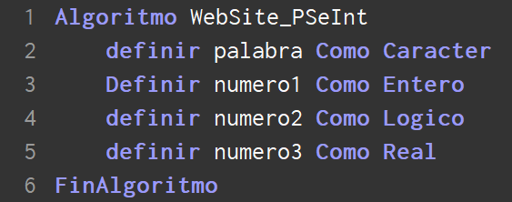
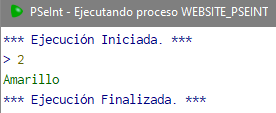
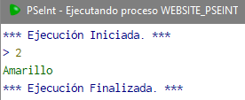
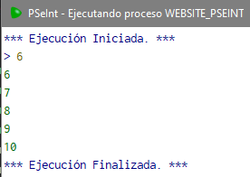

WebSite PSeInt
Rubén Plazas, Juan Maria Nolasco y Pablo SutilPSeInt
¿Qué es PSEINT?
¿Para que sirve PSEINT?
Caracteristicas y Funcionalidades de PSeInt


Funciones
-Basicas
A continuacion veremos las funciones mas básicas de PSeInt
- Definir
- Escribir Esta parte es la del codigo, la funcion de escritura se añade dandole click a 'Escribir' en la barra izquierda.
- Leer
- Asignar
PSeInt te permite definir una variable como numero real, con comas, como un caracter...
Definir como Caracter = Defines como una palabra/letra, encerrado en comillas ("...")
Definir como Entero = Defines como un numero entero, sin puntos o comandos
Definir como Logico = Defines como Boolean, o es Verdado, o Falso.. (V/F)
Definir como Real = Defines como un numero, pero este si admite comas o puntos

Puedes añadir una palabra entre comillas o por ejemplo una funcion que hayas leido antes

La función 'Leer' permite al IDE leer una frase introducida en la consola de comandos, la cual quedará guardada en la variable cuyo nombre se defina despues de leer.
Esta imagen representa el ejemplo de como leer una frase introducida en la consola de ejecución, y que luego el PSeInt guardará en la variable 'fraseALeer'
La funcion 'Asignar' sirve para darle un valor a una variable mediante una expresion, puede ser un valor introducido en la propia expresion, o asignarle otra variable creada anteriormente.
En esta imagen podemos ver que le asignamos a 'variable' la palabra 'hola'. Vamos a ejecutar el código para que se vea la diferencia entre el primer valor de 'variable' y el segundo.

Como se puede apreciar, al leer la variable le hemos introducido el valor 'adios', pero cuando le hemos asignado el valor 'hola' a la variable, se ha cambiado ese 'hola' por el 'adios' que le hemos asignado
En este codigo vamos a hacer el segundo ejemplo de asignacion que habiamos hablado, en este caso vamos a leer 2 variable, y vamos a asignarle una de las que leamos a la otra...
Como podemos comprobar, a 'variable1' le hemos asginado el valor 'hola', y ha 'variable2' el valor 'adios'. De primeras 'variable1' contenia 'hola', pero cuando le hemos asignado el valor de 'variable2' a 'variable1', ese 'hola' a sido reemplazado por un 'adios'
-Estructuras de Control
- Si-Entonces
- Segun
Es una sentencia de control que implica que se pueda realizar una accion en funcion de cumplirse un caso determinado y permite asignar un valor por defecto en caso de que no se cumpliera dicho caso
Aqui podemos ver un ejemplo donde vamos a calcular la nota de un alumno. Si la nota es mayor de 5, esta aprobado, pero de lo contrario, esta suspendido


Ejemplos de ejecucion del codigo
Esta sentencia de control es como el Si-Entonces, pero ofrece muchos casos en vez de uno. Tambien te permite meter un caso por defecto en caso de que no se cumpla el resto
Tenemos un codigo con el que le pasamos un numero a través de la consola, y nos devuelve un color
 

Aqui tenemos varios ejemplos de ejecucion del codigo
-Bucles
- Mientras
- Repetir
- Para
Es el primer bucle que vamos a ver. Lo que te permite un bucle es realizar una accion un numero indeterminado de veces mientras se cumpla una expresion logica, o se cumpla una expresion de salida de bucle

En este codigo, el PSeInt va a escribir el numero introducido hasta 10, independientemente de en que numero empieze


Podemos ver como efectivamente van saliendo todos los numeros hasta que llega a 10 , donde se detiene la ejecución
Este es un bucle mas propiamente dicho, dado que repite una secuencia de acciónes hasta que se cumpla una expresion lógica, en caso de no cumplirse, seguirá ejecutando las acciones
Hemos cogido el mismo ejemplo de antes, pero con 'Repetir'. Introduces un numero, y este se irá incrementando hasta ser =10

Ejemplos de codigo, que verifican que el codigo llega hasta 10 desde el numero introducido por consola, y finaliza el codigo
Nos permite ejecutar pasos a un ritmo que nosotros queramos, con una variable final y una variable numerica a la que le asignamos un valor principal. Mientras ira ejecutando una secuencia de acciones
Aqui tenemos el codigo que, como en los ejemplos anterioes, vamos a hacer que se muestren todos los numeros hasta el 10
-Diagramas De Flujo
- Escribir
- Leer
- Asignar
- Si-Entonces
- Segun
- Mientras
- Repetir
- Para
Asi es como se representa la secuencia de escritura en un diagrama de flujo de PSeInt
Asi quedaría representada la lectura de una variable en el diagrama de flujo
Asi se representa la asignación en el diagrama de flujo
Asi se representa la sentencia de control Si-Entonces en el diagrama de flujo
Asi se representa la sentencia de control segun en el diagrama de flujo
Asi se representa la sentencia de control Mientras en el diagrama de flujo
Asi se representa la sentencia de control Repetir en el diagrama de flujo
Asi se representa la sentencia de control Para en el diagrama de flujo
-Metodos
Sirven para desarrollar codigo en clases aparte, para hacer el codigo de la clase principal mas entendible
En este codigo podemos ver como hemos creado un metodo/funcion que le pasamos como parametro y nos devuelve el parametro que se le ha pasado.
Proyecto PSeInt
En esta sección se pondrá en práctica algunas de las funciones del PSeInt con este ejercicio:
Desarrolla una calculadora Suma, Resta, Multiplicación y División
con menú y mediante funciones. Debe de llevar acumulada la útima operación.
Además,
desarrolle un algoritmo que permita leer 10 valores y almacenarlos en un array. Posteriormente
mostrará todos los datos de forma contraria a como se han introducido.
Tutoriales PSeInt
Tutorial sencillo manejo de PSeInt
Tutorial PSEINT - Slideshare
TUTORIAL DE PSEINT.doc - 1Library.Co
Archivos utilizados en la web: Imagen de fondo